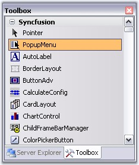
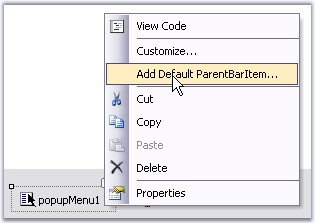
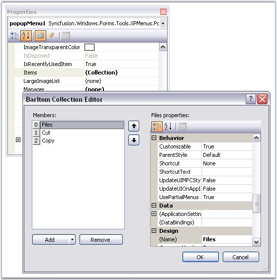
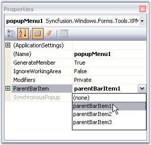
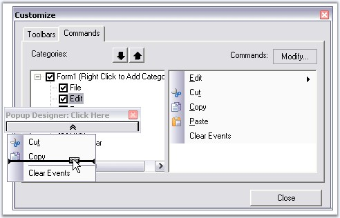

Adding a PopupMenu
Drag and drop a PopupMenu from the toolbox onto the designer form.

Figure 811: PopupMenu in the Toolbar
Filling the Popup Menu
In the Absence of a BarManager
A PopupMenu needs to be associated with a ParentBarItem in order to fill it with menu items. Right click the PopupMenu and select "Add Default ParentBarItem" if there is no ParentBarItem added for the Menus before.

Figure 812: Add Default ParentBarItem Design-Time Verb
In the absence of a BarManager, use the PopupMenu.ParentBarItem.Items property's collection editor to add items to the popup menu.

Figure 813: BarItem Collection Editor
 Note: With such a custom ParentBarItem
associated with the popup menu, you cannot add items using drag-and-drop from
the BarManager.
Note: With such a custom ParentBarItem
associated with the popup menu, you cannot add items using drag-and-drop from
the BarManager.
In the Presence of the BarManager
You can also reuse the ParentBarItem that you have already created for your menu structure using BarManager to fill the Popup menu. To do so, set the ParentBarItem property of the Popup menu to one of the available ParentBarItems.

Figure 814: Reusing ParentBarItem added through BarManager
In the presence of a BarManager, the user can just drag BarItems into the popup menu. Right-click on the popupMenu1 and select Customize to invoke this dialog and drag the required menu items.

Figure 815: Customize Dialog Box
Note: You can also display the popup menu
programmatically by calling PopupMenu.Show method. See How to programmatically show a Popup Menu
See also
· Associating Popup Menu To a Control,
· Grouping Items in a Popup Menu,
· How to programmatically show a Popup Menu